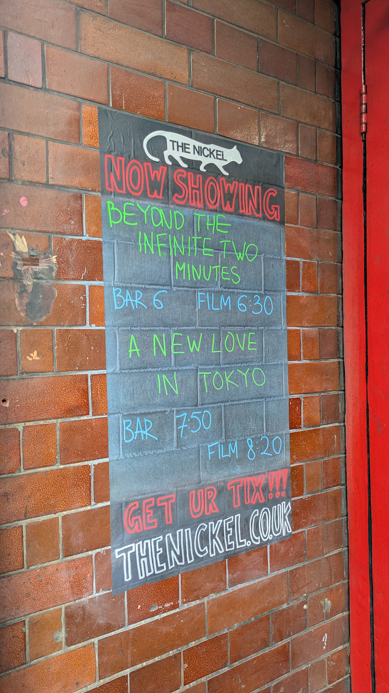
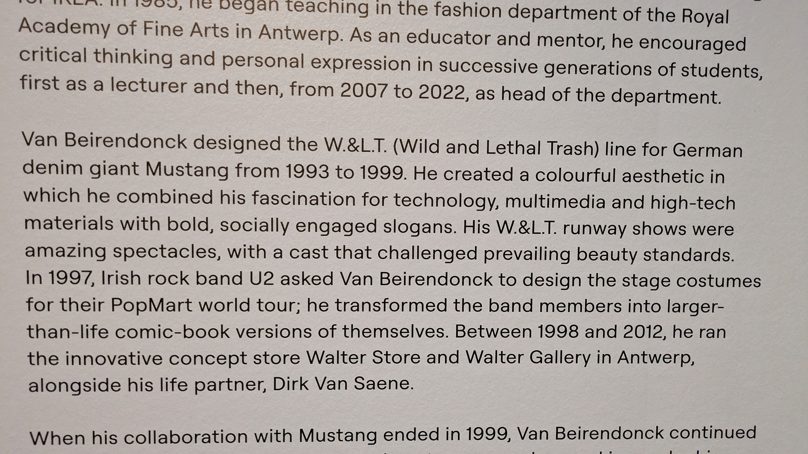
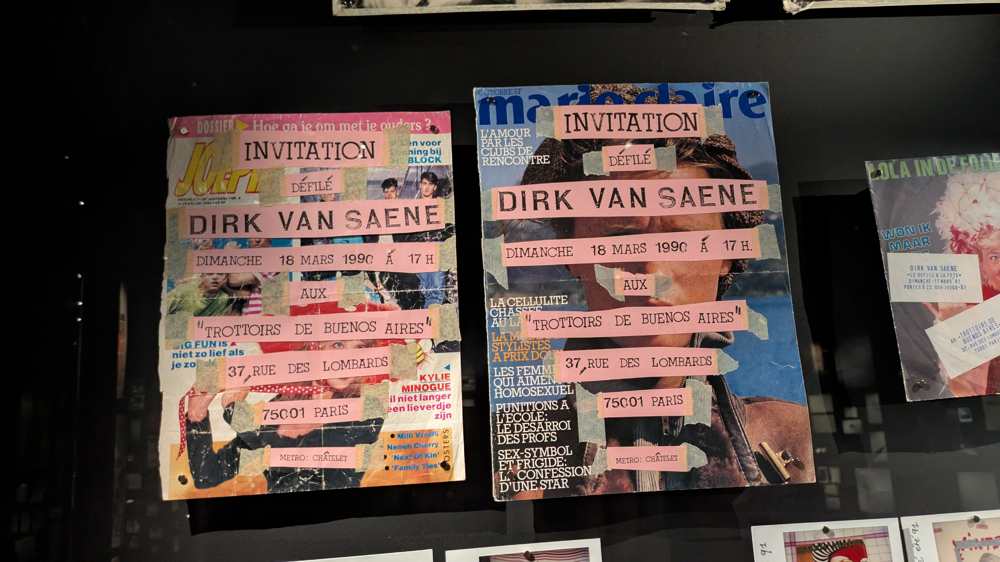

I won't go into battle and die for you. I will go into battle with you. And never die but by each other's hands.
August 15, 2026, 2:14pm
Finished Bluets, including re-reading the parts I wanted to. You might appreciate the writing style, especially when you're in the mood to take on some heavy stuff.
July 29, 2026

July 10, 2026, 2:44pm


June 17, 2026, 8:12pm
Played Give into me again after a while and realized it has gotten easier now that I know I can barre that last note!